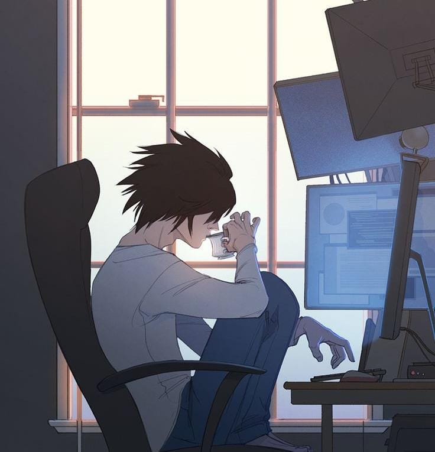
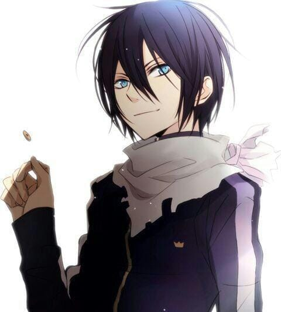
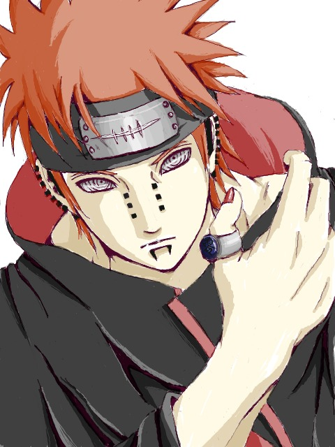
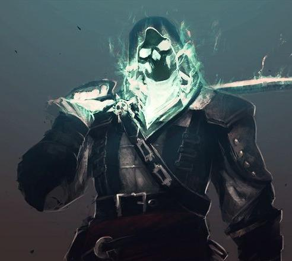
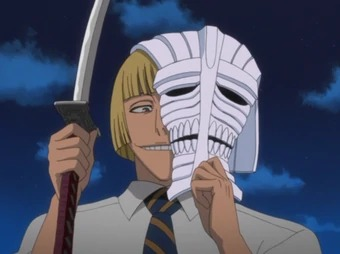
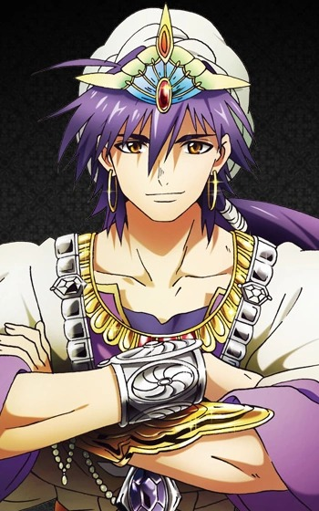
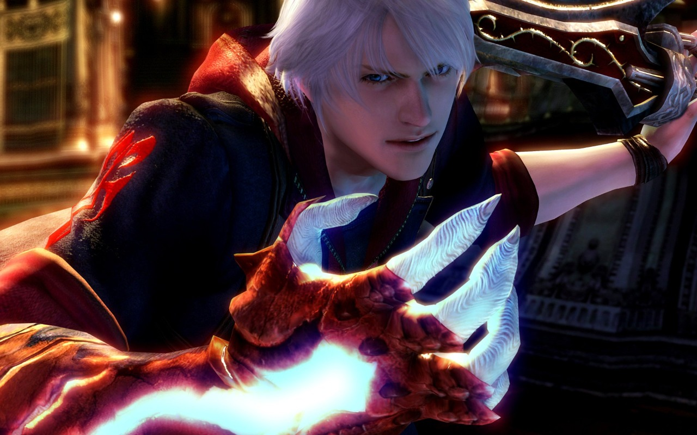
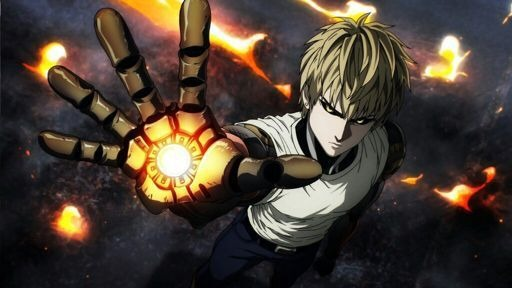

BLINDERS MEMBROS
L Lawliet e Ebrecher
 São os lideres da organização, eles dão as ordems para todos e comanda cada um com um localizador com camera implantados em seus olhos, eles controlam toda a organização pelo seu super PC, mas nimguem sabe quem é o lider, nem mesmo quem é da organização.
Yahiko Pain
É o vice lider da organização responsavel por receber as missões do lider e repassar para todos da sede, é responsavel pelas patrulhas de segurança que rodeiam o local que da acesso a sede secreta da Blinders.
Soul Gary
É o responsavel pela segurança do lado de fora da organização, ele cuida junto de mais duas pessoas da proteção pela cidade de Karakura protegendo de possiveis invasores que queiram destruir a cidade.
Hhinji Hirako
É o treinador da organização, responsavel pelo treinamento e preparação de novatos da Blinders, ele possui um grande poder de espadas, e conhece o lider da organização de Las Noches.
Sinbad
É o responsavel pelo centro do exercito, comandando eles para ameaças de alto nivel como invasão de celestiais a cidade, ele pode tanto mandar o exercito como pode cuidar de algumas coisas gigantes sozinho pelo seu grande poder.
Nero 'S
É um dos que patrulha a cidade junto de Gary, ele é responsavel por Capturar os invasores e os levar para a sede da Blinders para interrogação.
isaac foster

É o assasino da organização Responsavel por assasinar os vilões que estão em pena de morte, e matar os vilões que não puderam ser capturados antes.
Genos
É responsavel pelo controle de toda a sede da organização, sua sala é no nucleo central da sede onde controla tudo, foi ele mesmo que criou o sistema da entrada secreta, e da organização não poder ser vista a olho nú, tambem possui habilidades de combate sendo um dos mais fortes da Blinders mas não entra muito em combates.